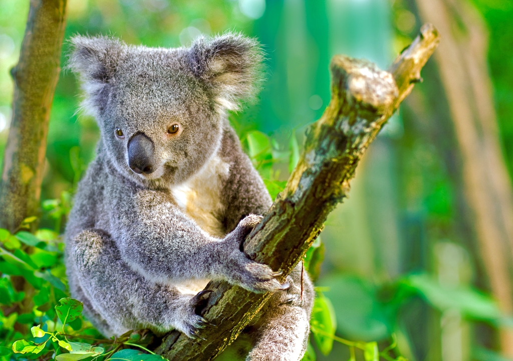
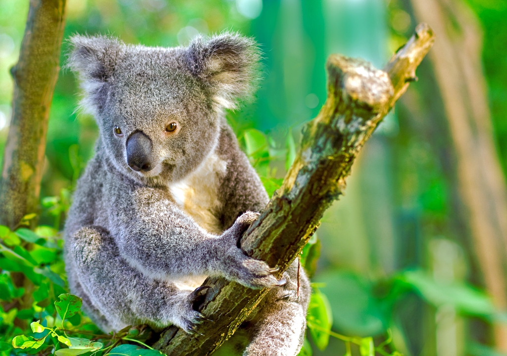

Факти
Ето някои неща, които може би
не знаехте:
1. Най-бързо растящото растение в света е бамбукът.
2. Делфините имат ехолокационна система.
3. Големият бариерен риф може да се види от космоса.
4. Най-ниското място е около 11 km под морското равнище.
5. Около 20% от кислорода на Земята се генерира в Амазония.
6. Някои секвои могат да живеят до 3000 години.
7. Коалите спят до 22 часа на ден.
8. Слоновете не могат да скачат.
9. Фламингото получава цвета си от ракообразните, които яде.
10. Кокосовите палми раждат приблизително 70 плода годишно.
 
